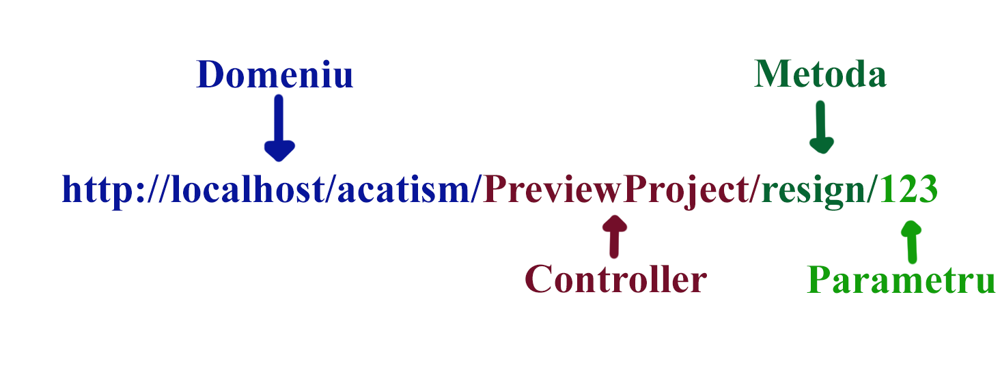

Acatism este o aplicatie web dedicata gestionarii tezelor de licenta si de master pentru studentii unei facultati. Aceasta ofera functionalitati atat pentru profesori cat si pentru studenti. Studentul poate sa se inscrie la un proiect propus pentru licenta, si, in urma confirmarii inscrierii, poate sa trimita si sa primeasca mesaje de la profesorul coordonator cu privire la proiect. Acestea pot fi conversatii, intrebari, deadline-uri sau notificari cu privire la orele de consultatii ale profesorului. Studentul va configura un repository de github al carui actualizari vor aparea in notificarile aplicatiei. Profesorul isi poate crea o lista de proiecte propuse, incluzand o descriere, resurse necesare si tag-uri pentru fiecare. Are abilitatea de a accepta sau refuza inscrierile studentilor la proiectele sale. Prin intermediul aplicatiei, poate programa evenimente de care studentii vor fi notificati. Atat conturile de student cat si cele de profesor trebuie confirmate de un administrator.
Teza de licenta este un subiect de interes ridicat, mai ales pentru noi, apropiindu-ne de momentul in care va trebui sa o facem si noi. Acesta este unul dintre motivele pentru care am ales acest proiect. Aplicatia este utila deoarece, filtrand proiectele dupa interese (prin tag-uri) studentului ii va fi mai usor sa decida ce teza de licenta sa realizeze. De asemenea, este pus accentul pe comunicarea dintre student si profesor prin sistemul de news feed care ii notifica pe ambii in situatii importante si ofera functionalitatea de a pune intrebari si de a crea deadline-uri. Integrarea cu github incurajeaza studentul sa se familiarizeze cu software ce urmareste schimbarile in codul sursa.
Pe pagina in care pot fi vizualizate informatii despre proiect si in newfeed se vor putea vedea, de asemenea, datele si titlurile commiturilor de pe git. De asemenea, cand un student face o schimbare pe git, profesorul la care este acel student va primi un mail cu informatii despre schimbare.
Pentru a face acest lucru posibil, folosim webhook-urile oferite de github pentru a fi notificati cand un student face o schimbare in repository-ul lui. Un exemplu tipical ar fi: studentul face un commit pe repository, Github ne trimite un request POST pe o adresa oferita de noi cu multe informatii despre eveniment. De acolo, putem da pull pe repository-ul local, putem trimite un mail profesorului ca ceva s-a schimbat, si bagam in baza de date o inregistrare care sa ateste acest lucru.
Alternativa "naiva" pentru webhook-uri ar fi fost verificare la fiecare x minute daca s-a schimbat ceva. Dezavantajul imens a acestei abordari este faptul ca foarte mult din resursele serverelui s-ar pierde, deoarece, mai ales cu un numar mare de repository-uri verificate, operatia ar deveni din ce in ce mai greoaie. De asemenea, precizia ar fi mai proasta, deoarece nu s-ar primi notificatia exact cand se intampla, ci s-ar verifica dupa o perioada posibil mare de timp.
Pagina in care se poate vizualiza repository-ul este un simplu filesystem viewer cu un folder local in care este repository-ul, clonat si updatat la ultima versiune de fiecare data cand se primeste un event de la Github.
Pentru a usura viata profesorilor si a studentilor, profesorii vor putea seta, pentru fiecare student (sau pentru toti studentii lui), deadline-uri pentru anumite task-uri, intalniri saptamanale/lunare, etc.
Pentru aceasta, folosim Google Calendar. Folosim o librarie oferita de Google pentru a adauga calendare si date importante in acestea. Aceasta librarie face request la API-ul de la Google, care face schimbarile dorite. In final, utilizatorii pot vedea calendarul pe pagina proiectului.
Pentru mesajele trimise intre studenti si profesori, acestia vor avea optiunea sa formateze textul folosind limbajul markdown. Markdown este un limbaj de formatare simplut, dar destul de puternic pentru cazul nostru de utilizare. In baza de date vom pastra textul in format Markdown, dar inainte de afisare, il vom converti in html.
Pentru trimis de mailuri, am ales sa folosim serviciul extern Sendgrid. Acesta are avantajul unei integrari mult mai bune cu PHP, si de faptul ca e mult mai de incredere decat un server SMTP pe care l-am hosta noi. Am putea folosi un server SMTP extern, dar unul de incredere or ar fi limitat la putine email-uri, ori ar trebui platit. De aceea, am decis ca Sendgrid este cea mai buna solutie.
Un utilizator neautentificat poate crea cont nou. Formularul de inregistrare este preluat, validat, si informatiile sunt salvate in baza de date urmand ca inregistrarea sa fie validata de un admin.
In cazul autentificarii, formularul de login este verificat si este creata o sesiune pentru utilizator.
Administratorii pot verifica formularele de inregistrare noi aparute in baza de date.
Un utilizator neconfirmat nu poate sa se autentifice (sa foloseasca Login).
Un formular refuzat este sters din baza de date.
Studentilor, profesorilor si utilizatorilor neautentificati li se poate afisa o lista de proiecte in aplicatie. Fiecare proiect va avea afisat numele profesorului, titlul, o mica descriere, numele studentului inscris (daca exista), nota si anul.
Lista va fi afisata initial de la cel mai nou la cel mai vechi proiect, dar se pot aplica filtre (titlu, taguri, profesor...).
Studentii care nu sunt inscrisi la un proiect au functionalitatea aditionala de a aplica la proiecte.
Studentii si profesorii pot vedea detaliile unui proiect la care studentul este inscris.
Se vor afisa alertele si mesajele legate de proiect atat intr-o litsta cat si pe un Google Calendar.
Studentul poate renunta la proiect, si profesorul poate renunta la student.
Studentului si profesorului li se afiseaza mesaje, evenimente, alerte automate si cereri de inscriere in ordine cronologica.
Se pot aplica filtre precum: titlu, importanta, expeditor, tip de notificare.
Se pot edita informatii pentru un proiect nou sau unul deja existent (titlu, descriere, resurse, taguri, student) si adaugarea sau actualizarea acestora in baza de date.
Se poate sterge proiectul.
Se poate trimite o cerere de inscriere catre profesorul care a propus anumit proiect. Aceasta va trebui acceptata manual.
Se poate renunta la proiectul ales. Renuntarea nu va trebui acceptata manual, dar profesorul va fi notificat.
Se poate trimite un mesaj de catre profesor la unul sau mai multi dintre studentii inscrisi la proiectele sale.
Se poate trimite un mesaj de catre student la profesorul care a propus proiectul la care este inscris sau doreste sa se inscrie.
Mesajelor le poate fi atribuit un nivel de importanta. Acestea apar in aplicatie, dar pot aparea si pe e-mailul destinatarului in functie de importanta si setarile utilizatorului.
Se poate adauga sau elimina din calendar un eveniment caracterizat de: tip, importanta, nume, descriere, data, ora, frecventa si numar de repetitii.
Se preia si valideaza un formular al carui date reprezinta setarile utilizatorului curent si sunt salvate apoi in baza de date.
Setarile sunt separate in trei categorii: de cont (credentialele si e-mailul), de interfata (numarul de elemente afisate pe pagini, culorile utilizate in aplicatie) si de notificari (nivelul de importanta si daca vor fi trimise prin e-mail). Setarile de interfata influenteaza modul in care sunt afisate paginile in aplicatie.
Este trimisa o notificatie profesorului la aparitia unui nou commit in repository.
Se poate afisa repository-ul proiectului.
In diagrama overview putem observa la nivel inalt modul de functionare a aplicatiei. Aceasta va fi construita pe baza paradigmei model-view-controller.
Fiecare pagina a aplicatiei va avea un controller al ei (ProjectListController, SettingsController etc.) si fiecare controller va pastra in memorie model-ul si view-ul folosit de acesta. Totodata, fiecare controller va avea si o functie index, functie ce va ocupa cu incarcarea in mod default a paginei.
Un controller se ocupa cu functionalitatea logica a aplicatiei. Daca controller-ul doreste sa obtina sau sa modifice datele salvate in aplicatie, acest lucru se va face prin intermediul model-ului aferent. Modelul va avea accesul la baza de date a aplicatiei si in cadrul acestuia se vor face apelurile de tipul: select, update, delete si insert.
Un view primeste datele ce urmeaza a fi afisate de la controller-ul aferent (descrierea unui proiect, lista de proiecte etc), le salveaza in memoria sa si dupa le afiseaza conform layout-ului propriu (Exemplu de layout: preview_project_students.php) prin intermediul functiei render.
Dispatcher-ul se va ocupa de rutarea cererilor catre controller-ul corect si catre metoda corecta a acestuia, daca este cazul. Un url va fi interpretat de dispatcher sub forma:
In diagrama Classes sunt prezentate clase ajutatoare ce vor mai aparea in cadrul aplicatiei noastre. Clasa Dispatcher este aceasi ca cea prezentata la punctul anterior. Clasa Session se va ocupa de administrarea detaliilor legate de sesiunea curenta, de initializarea si oprirea ei si de adaugarea si obtinerea de informatii legate de aceasta.
Apelurile la baza de date MySql a aplicatiei se vor face prin intermediul clasei Database. Aceasta este de tip Singleton pentru a evita instantierea a mai multe conexiuni cu o aceasi baza de date si se folosete de PDO pentru initializarea apelurilor la baza de date pentru a ne feri de atacuri precum SQL injection.
Clasele Notification si User vor fi folosite pentru facilitarea operarii cu aceste entitati la nivel logic (controllere). Acestea vor fi create la nivelul Model cu ajutorul inregistrarilor luate din tabelele pe care acestea le reprezinta si oferite nivelului Controller.
In diagrama Model-View-Controller este reprezentat in mod amanuntit modul de organizare al tuturor claselor de tip Controller, de tip Model si de tip View si relatiile care vor exista intre acestea. Fiecare pagina va avea cate un controller aferent (HomeController, ProjectListController, SendMessageController etc.) si cate un model (ProjectList_Model, NotificationMaker_Model etc.).
Pentru doua sau mai multe pagini ce acceseaza informatii asemanatoare, cum ar fi EditProject si PreviewProject, vom folosi un model comun (pentru exemplul ales, Project_Model) pentru a evita repetarea de cod in mai multe clase diferite.
Deoarece singurul lucru care diferentiaza view-ul unei pagini de al alteia este layout-ul ce trebuie incarcat, vom avea o singura clasa View al carei comportament va fi modificat de layout-ul pe care aceasta il primeste la initializare.
Tabela users pastreaza datele utilizatorilor comune atat pentru profesor cat si pentru student, precum credentialele si un e-mail. Exista o relatie cu id-ul tabelei users la doua tabele ce contin informatii particulare pentru fiecare tip de cont: students si professors.
Exista o relatie one-to-one intre tabela users si tabela settings, care contine setarile utilizatorului pentru aplicatie (numarul de elemente din liste, culorile folosite in pagina, importanta notificarilor.
Atributul confirmed este implicit fals, si e modificat in true atunci cand contul este confirmat de un administrator. Unui utilizator i se creeaza o inregistrare in tabela settings doar dupa ce este confirmat.
Tabela notificari contine informatii despre toate notificarile. Acestea sunt id-ul notificarii la care este raspuns (daca notificarea este un raspuns), titlul, descrierea, data creatiei, importanta, tipul, id-ul expeditorului, id-ul destinatarului, si id-ul proiectului (in cazul in care notificarea reprezinta o aplicare sau retragere de la un proiect, este nevoie de un id al proiectului).
Tabela proiecte contine informatii despre toate proiectele. Exista o relatie many-to-many intre aceasta si tabela tags, realizata prin intermediul tabelei de legatura project_tags. Proiectele sunt caracterizate de titlu, descriere, an (pentru a distinge proiectele de licenta de cele de master), id-ul profesorului, id-ul studentului (daca un student a fost acceptat), resurse (o lista creata de catre profesor), data creatiei, data inceput, data terminare si nota (daca proiectul a fost finalizat) si prezentat.
Diagrama UML, diagrama use-case
Informatii generale despre MVC
Aplicatia Acatism face mai usoara alegerea unui proiect de licenta sau master pentru studenti. Sistemul de notificari este o metoda versatila de a gestiona mai multe aspecte ale comunicarii dintre student si profesor, precum deadline-uri si programarea intalnirilor sau consultatiilor.